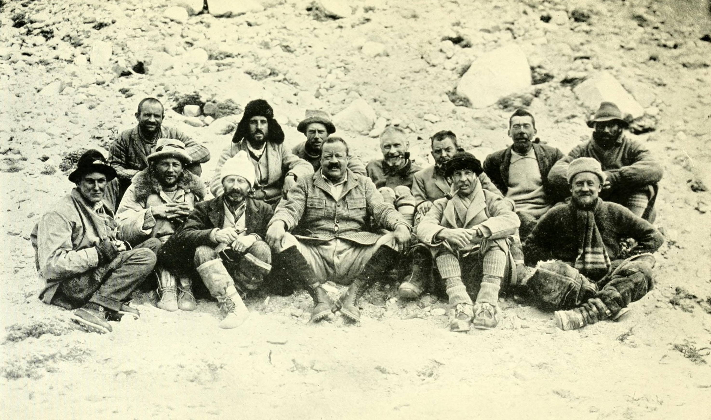
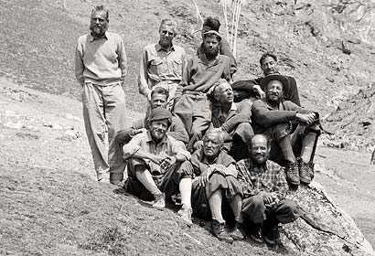
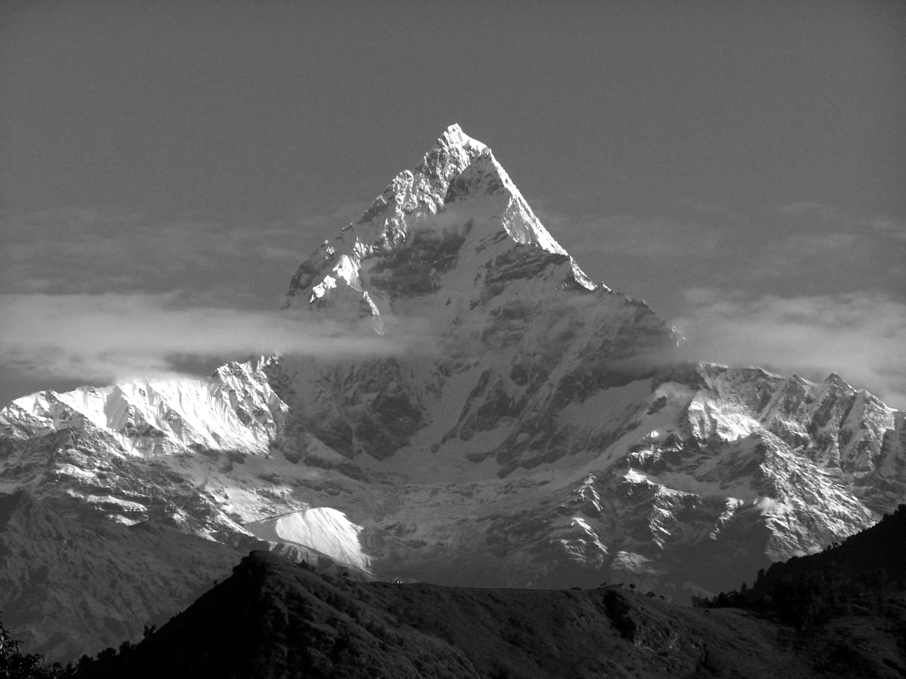
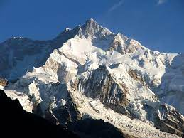

El Himalaya es una cordillera ubicada en el sur de Asia, que se extiende a lo largo de varios países, como India, Nepal, Bután, China, Pakistán, Afganistán y Bangladesh. Es el sistema montañoso más alto del mundo, con picos que superan los 8000 metros de altura, como el Monte Everest.
|  Expedicion Britanica al Everest 1921 |
 Expedicion Suiza al Lhotse 1956 |
|  Expedición Francesa al Annapurna de 1950 |
 Expedición Británica al Kangchenjunga de 1955 |